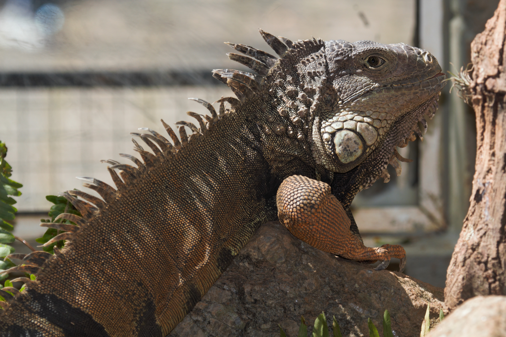

Mamíferos
Aves
Répteis
-
Leão
Leão (Panthera leo)
Rei da selva!
Habitat: Savanas africanas, preferindo áreas com grama alta e arbustos.
Alimentação: Carnívoro, caça em grupo, principalmente grandes mamíferos como zebras e antílopes.
Comportamento: Animais sociais que vivem em grupos chamados de leões. Os machos possuem uma juba característica e são responsáveis por proteger o território. As fêmeas caçam e cuidam dos filhotes. -

Onça Pintada
Onça-pintada (Panthera onca)
A fera das Américas!
Habitat: Florestas tropicais da América, desde o México até a Argentina.
Alimentação: Carnívora, caça uma variedade de animais, desde roedores até capivaras.
Comportamento: Solitária e excelente nadadora, a onça-pintada é um predador de topo de cadeia alimentar. -

Bugio
Habitat: Florestas da América Central e do Sul, especialmente em áreas com árvores altas.
Alimentação: Herbívoro, alimenta-se principalmente de folhas, frutos e flores.
Comportamento: Vive em grupos e é conhecido por seus longos e altos uivos, que servem para marcar território e se comunicar.
-

Arara
Araracanga (Anodorhynchus hyacinthinus)
A joia alada do Brasil!
Habitat: Pantanal e Cerrado brasileiros, em áreas próximas a rios e lagos.
Alimentação: Frutífera, alimenta-se de palmitos, sementes e frutos, como o buriti.
Comportamento: Vive em pares ou em pequenos grupos e é conhecida por sua plumagem azul vibrante. -
Tucano
Tucano (Ramphastos)
O bico colorido da floresta!
Habitat: Florestas tropicais da América Central e do Sul.
Alimentação: Onívora, alimenta-se de frutas, insetos e pequenos vertebrados.
Comportamento: Solitário ou em pequenos grupos, o tucano utiliza seu bico para alcançar frutos em locais de difícil acesso.. -
Ema
Ema (Rhea americana)
O avestruz sul-americano!
Habitat: Pampas e cerrados da América do Sul.
Alimentação: Onívora, alimenta-se de sementes, frutos, insetos e pequenos vertebrados.
Comportamento: Vive em grupos e é capaz de correr a altas velocidades, sendo uma das aves mais rápidas do mundo.
-

Jacaré
Jacaré (Caiman)
Réptil aquático das Américas!
Habitat: Águas doces de regiões tropicais e subtropicais das Américas.
Alimentação: Carnívoro, alimenta-se de peixes, aves, mamíferos e até outros répteis.
Comportamento: Semi-aquático, passa grande parte do tempo na água, mas também se expõe ao sol para regular a temperatura corporal.
Características: Corpo alongado, pele escamosa, patas curtas e uma poderosa mandíbula.
-
Jibóia
Jiboia (Boa constrictor)
A sufocadora das Américas!
Habitat: Florestas tropicais da América Central e do Sul.
Alimentação: Carnívora, alimenta-se de aves, roedores e outros mamíferos, que são engolidos inteiros.
Comportamento: Solitária e noturna, passa grande parte do tempo enrolada em árvores ou no chão.
Características: Corpo alongado e sem patas, capaz de se enrolar em torno de suas presas e sufocá-las. -

Iguana-verde
Iguana-verde(Iguana iguana)
A iguana-verde: a escaladora das árvores
Habitat: Florestas tropicais da América Central e do Sul.
Alimentação: Herbívora, alimenta-se principalmente de folhas, flores e frutos.
Comportamento: Arborícola, passa a maior parte do tempo nas árvores. É um excelente nadador e pode ficar submersa por longos períodos.